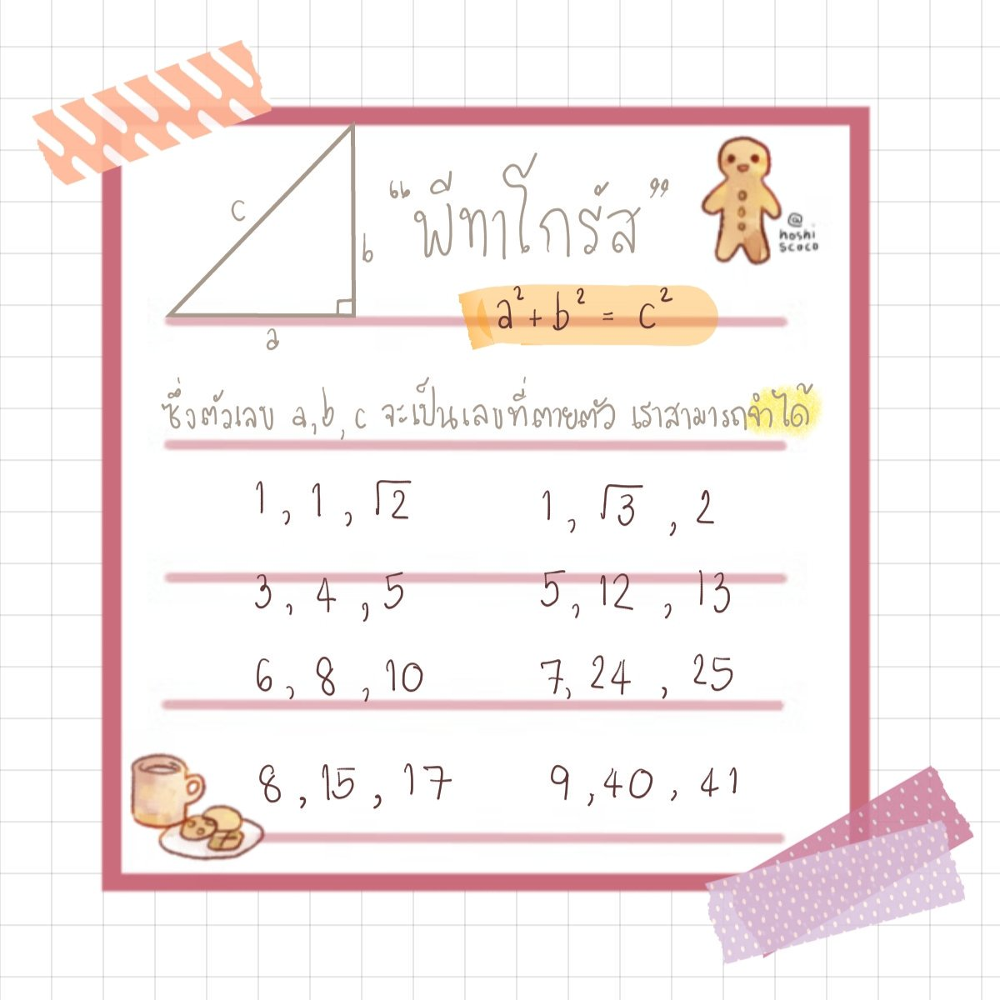

คุณสมบัติของชุดตัวเลขพีทาโกรัส
ชุดตัวเลขพีทาโกรัสคือกลุ่มของจำนวนเต็มสามจำนวนที่สอดคล้องกับทฤษฎีบทพีทาโกรัสอย่างลงตัว หากนำอัตราส่วนของชุดตัวเลขพีทาโกรัสไปคูณด้วยจำนวนจริงบวกใดๆ ผลลัพธ์ที่ได้จะยังคงเป็นความยาวด้านของรูปสามเหลี่ยมมุมฉากเสมอ รูปสามเหลี่ยมที่มีความยาวด้านเป็นอัตราส่วน 3 ต่อ 4 ต่อ 5 เป็นรูปสามเหลี่ยมมุมฉากพื้นฐานที่ถูกนำมาใช้ตรวจสอบการตั้งฉากในงานก่อสร้างตั้งแต่สมัยโบราณ.